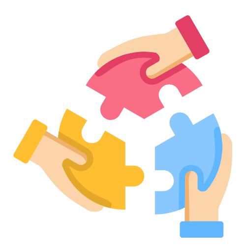

Análisis del impacto de las comunidades en Barcelona
Objetivo
Evaluar el impacto de las comunidades de mujeres en tecnología en Barcelona
Metodología
Encuesta dirigida a profesionales del sector tecnológico
ODS
Contribución a los Objetivos de Desarrollo Sostenible

Contexto del Estudio
Este dashboard presenta los resultados de una encuesta realizada a profesionales del sector tecnológico en Barcelona, con el objetivo de analizar el impacto de las comunidades de mujeres en tecnología.
Los datos recopilados nos permiten entender mejor cómo estas iniciativas contribuyen a la inclusión, el desarrollo profesional y la superación de barreras en el sector tecnológico.

Áreas de Análisis
- Perfil sociodemográfico de las participantes
- Niveles de participación en comunidades
- Impacto en la inclusión tecnológica
- Barreras superadas y beneficios obtenidos
- Contribución a los ODS
 Perfil Sociodemográfico
Perfil Sociodemográfico
Características demográficas y profesionales de las participantes
Distribución por Edad
Nivel Educativo
Experiencia en Tecnología
Sector de Organización
 Participación en Comunidades
Participación en Comunidades
Análisis de la participación activa en comunidades tecnológicas
Frecuencia de Participación
Roles Desempeñados (Últimos 24 meses)
 Inclusión en Entornos Tecnológicos
Evaluación del impacto en la inclusión y pertenencia
Impacto en Inclusión
Participación Activa vs Pasiva
 Impacto de Iniciativas
Impacto de Iniciativas
Análisis del impacto de las iniciativas comunidad-empresa
Beneficios Obtenidos
Contribución a los ODS
Barreras Superadas
Análisis de las barreras que las comunidades han ayudado a superar
Principales Barreras Superadas
Datos Detallados
Exploración detallada de las respuestas individuales
Tabla de Respuestas
| Edad | Nacionalidad | Educación | Experiencia | Participación | Impacto |
|---|